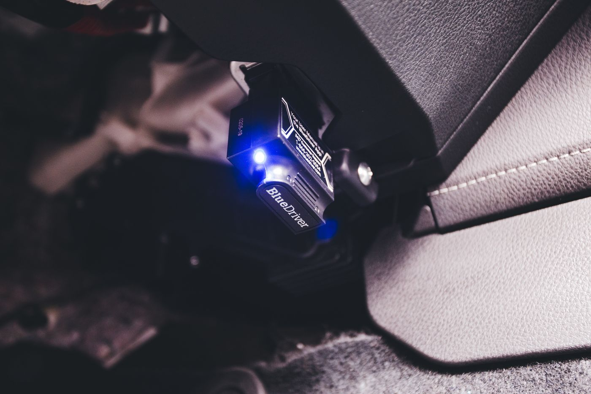

One of Five Truck Programmers Publishes a CARB EO Number
Five handheld programmers, $268.95 to $448.95, and one of them tells you whether it is legal in California. Not one of the cheapest four, either — the only listing that publishes a CARB Executive Order number is tied for the most expensive in the group. The rest publish no emissions line of any kind
Of five handheld programmers priced $268.95 to $448.95, exactly one publishes a CARB Executive Order number. The DiabloSport inTune i3 lists CARB EO D-770 and D-802-19 and an Emissions row reading California EO Approved. The other four listings have no EO field, no emissions row and no California statement anywhere on the page.
The $448.95 Superchips Flashpaq F5 Pro arrives with no pre-loaded tunes at all — it exists to load custom files built by an HP Tuners dealer. The $377.99 SCT X4, seventy-one dollars cheaper, ships pre-loaded with dyno-proven tune files. ‘Pro’ here means fewer tunes in the box, not more.

Five handheld programmers, $268.95 to $448.95, and one of them tells you whether it is legal in California. Not one of the cheapest four, either — the only listing that publishes a CARB Executive Order number is tied for the most expensive in the group.
The rest publish no emissions line of any kind. That is the finding, and it is worth being precise about what it does and does not mean.
Every price, rating and emissions field below was read from the product spec block on 19 November 2026.
The five, in price order
| Device | Price | Rating | Publish an EO? | What it writes |
|---|---|---|---|---|
| Superchips GM Flashcal 2545 | $268.95 | 4.0 · 18 | No EO field | Speedometer, gears, TPMS — no tune |
| SCT X4 Power Flash 7015 | $377.99 | 4.25 · 79 | No EO field | Pre-loaded tune files |
| Bully Dog BDX 40470 | $377.99 | 3.5 · 16 | No EO field | Pre-loaded, 10 custom tunes |
| Superchips Flashpaq F5 Pro 3874 | $448.95 | 4.5 · 8 | No EO field | No pre-loaded tunes |
| DiabloSport inTune i3 8200 | $448.95 | 4.5 · 18 | Yes — D-770, D-802-19 | Pre-loaded, 50-state certified |
What the one EO listing actually says
The DiabloSport spec block contains two fields the other four do not have at all:
- CARB EO Number(s): D-770, D-802-19
- Emissions: California EO Approved
Two numbers, not one, because D-802-19 is the later amendment superseding parts of D-770. Both are published together, which is the correct way to list them — quoting only D-770 would leave out coverage the device actually has.
D-770 is titled, in full: “Relating to Exemptions Under Section 27156 of the California Vehicle Code — DiabloSport inTune 12 CE, inTune 13 CE, inTune 12, inTune 13, Predator 2, and Trinity 2 Programmers.” Note what that list does and does not contain: the i3 is not named in the D-770 title as I read it, which is exactly why the second number matters. The later order covers the GM V-8 tunes manufactured by Powerteq — DiabloSport’s parent, alongside Edge Products and Superchips.
Check both numbers against your model year, not just the product page. An EO covers specific vehicles and specific model years, and a listing that names the EO does not tell you your truck is inside that coverage.
The four that publish nothing
I searched each of the other four pages for CARB, Executive Order, EO#, 50-State, and emissions. All five searches came back empty on all four listings.
What that means, stated carefully: the listing does not publish an EO, so you cannot confirm from it that the device is legal in California. It does not prove no EO exists — a manufacturer can hold one and the retailer not print it. But you cannot buy on the strength of a field that is not there, and the practical result is the same for a California buyer: unverifiable until you go find the order.
A part with no applicable CARB Executive Order is not legal for street use on a registered vehicle in California and will fail a smog visual inspection. That is the rule the field exists to answer, and on four of these five listings the field is absent.
The one explicit warning, and what it is not
The Bully Dog BDX carries a Special Attention line: “Part not for use on applications with deleted emission controls.” That is the most direct emissions statement of the four, and it is a restriction rather than a compliance claim — it tells you what the device must not be paired with, not that it is approved.
Separately, all five listings display a CA Warning badge. That badge is Proposition 65 — the panel behind it reads “Cancer and Reproductive Harm.” It has nothing to do with CARB and nothing to do with emissions. Almost every part on the site carries it, including brake rotors. Do not read it as an emissions verdict in either direction.
The cheapest device does not tune
The Flashcal at $268.95 is the least expensive of the five, and it does not write a performance calibration at all. Its listed functions are:
- Speedometer correction for tires 26 in. to 38 in.
- Recalibration for gear and axle swaps
- Speed and rev limiter options
- TPMS options
- Read and clear diagnostic trouble codes
- Battery voltage display, real-time data logging and monitoring
That is a recalibrator, not a tuner. It fixes the things a lift and bigger tires break — the speedometer, the shift points, the TPMS thresholds — and leaves the engine calibration alone. For a truck on 35s it is the device most owners actually need, and it is the cheapest.
It is also upgradeable to a Flashpaq, per the listing, which matters if you want both jobs from one purchase.
“Pro” costs more and contains fewer tunes
This is the detail that should stop you at the checkout page:
- SCT X4, $377.99 — “pre-loaded with dyno-proven tune files for select vehicles.”
- Superchips Flashpaq F5 Pro, $448.95 — “there are no pre-loaded tunes.”
The F5 Pro’s actual job is to read stock files and load custom-tuned files built through HP Tuners software by a dealer. It holds four custom tunes and logs up to eight PIDs. If you do not have an HP Tuners dealer and a custom tune to load, the $448.95 device gives you nothing the $377.99 one does not.
“Pro” in this product line means unlocked for custom files, not bundled with more. That is a legitimate product — if you are working with a tuner, it is the one to buy — but it is not an upgrade path most buyers think they are on.
Two things that are not in the price
- The F5 Pro needs a tuner in the loop. The device is the hardware half; the tune is a separate purchase from a dealer.
- The SCT X4 lists a PC requirement: “Requires use of Windows Vista, Windows 7, 8, or 10 for updates.” No Mac path is stated. If you update on a Mac, plan around it.
What to check before buying any of these
- Does the listing publish a CARB EO number? If not, you cannot confirm legality from the page.
- Does the EO cover your model year? Read the order, not the product title.
- Are there pre-loaded tunes, or does the device need a dealer-supplied file?
- Do you need a tune at all, or just a speedometer correction for bigger tires? The cheapest device here does the second job and not the first.
- What does it monitor and log? PIDs and custom-tune slots differ per device and are listed.
What I could not verify
- Whether the four without a published EO actually hold one. Absence from a listing is not proof of absence. I did not locate an order for any of them.
- The full vehicle coverage behind either DiabloSport EO. I read the D-770 title and a summary of D-802-19, not the orders’ complete application tables. CARB’s searchable EO database was not reachable during this research.
- Horsepower or torque gains for any device. None of the five publishes a dyno figure for a specific application on the listing, and I will not repeat a manufacturer claim as a measurement.
- Fitment beyond the makes named in each summary. Application tables load separately and were not read. Confirm by year, make, model and engine.
- Warranty effect. Not covered here; see the separate tuning guide for how Magnuson-Moss works in practice.
Topics
- Tuning
- HP Tuners